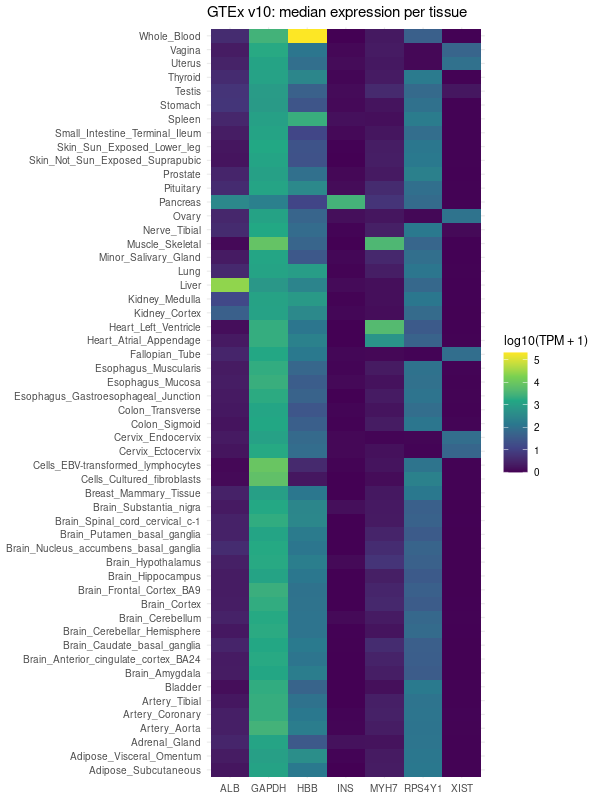
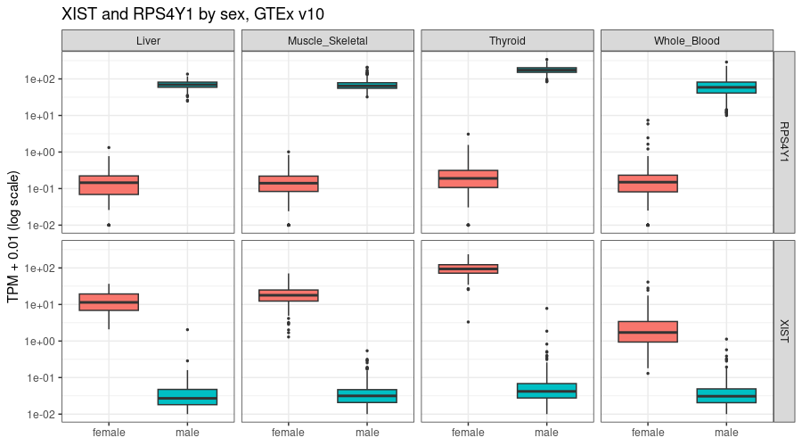

Exercise in R: Eukaryotic regulation & epigenetics
Goal
By the end of this exercise you should be able to:
- turn a wide table (one column per gene) into a long one with
pivot_longer(), and say why ggplot2 and dplyr want long data; - summarise expression per gene, tissue and sex with
group_by()andsummarise(); - see how a pooled median over a mixed group can hide a whole sex, using XIST in GTEx.
Before you start
This page builds on the by-hand part of the Exercise, so do that first. You need the packages readr, dplyr, tidyr and ggplot2. Download both files and save them in a data/ folder of your R project:
- gtex_median_tpm.csv: median expression (TPM, transcripts per million) of seven genes in each of the 54 GTEx tissues, all samples pooled;
- gtex_sex_tpm.csv: one row per sample, the TPM of XIST and of the Y-linked gene RPS4Y1 in four tissues, with the donor’s sex.
Both are real data from the GTEx Portal API, release GTEx v10 (GENCODE v39), downloaded on 2026-11-20; see the data README for the exact queries. The first lines of each file, starting with #, record the source; read_csv(..., comment = "#") skips them.
library(readr)
library(dplyr)
library(tidyr)
library(ggplot2)Tasks
New idiom today: long vs wide, and grouped summaries. A wide table has one column per gene. A long table has one row per measurement, with a column saying which gene it is. pivot_longer() turns wide into long; pivot_wider() goes back. Long tables are what group_by() + summarise() and ggplot2 work with: “for each gene”, “colour by gene” and “facet by tissue” all need the gene as a column, not as column names.
The genes: GAPDH (a glycolysis enzyme, expressed everywhere), ALB (albumin, liver), INS (insulin, pancreatic β cells), HBB (β-globin, red blood cells), MYH7 (β-myosin heavy chain, heart and slow skeletal muscle), XIST (X-inactivation lncRNA) and RPS4Y1 (a ribosomal protein gene on the Y chromosome).
R1. (wide to long) Read data/gtex_median_tpm.csv. How many rows and columns does it have? Use pivot_longer() to make a long table med_long with columns tissue, gene and tpm. How many rows does it have now, and why?
med <- read_csv("data/gtex_median_tpm.csv", comment = "#", show_col_types = FALSE)
med_long <- med |>
pivot_longer(-tissue, names_to = "gene", values_to = "tpm")R2. (where is each gene on?) For each gene, find the tissue with the highest median (slice_max() after group_by(gene)). Then summarise each gene over tissues: the median of the medians, the maximum, and the number of tissues above 10 TPM. Which genes are tissue-specific and which are expressed nearly everywhere? Anything surprising?
R3. (a heat map) Plot med_long as a heat map with geom_tile(): genes on the x axis, tissues on the y axis, fill = log10(tpm + 1). Why do we take the log, and why add 1?
R4. (XIST and RPS4Y1) Filter med_long to XIST and RPS4Y1, use pivot_wider() to put the two genes side by side, and sort by XIST. Which tissues top the list? XIST is expressed from the inactive X in every female cell, so why is its median close to 0 in, say, skeletal muscle?
R5. (summarise by sex) Read data/gtex_sex_tpm.csv. With group_by(tissue, gene, sex) and summarise(), compute for each group the number of samples, the median TPM and the fraction of samples above 1 TPM. Then compute the pooled median per tissue and gene (ignoring sex), with the number of female and male samples. Explain the pooled XIST median.
R6. (plot by sex) Make box plots of TPM by sex, with facet_grid(gene ~ tissue) and a log y axis (scale_y_log10(); add 0.01 so that zeros can be plotted). Are there samples that break the pattern? Suggest possible explanations, and say what you cannot conclude from these data.
Solutions
R1. The wide table has 54 rows (tissues) and 8 columns (tissue + 7 genes). The long table has 54 × 7 = 378 rows: one per tissue–gene pair.
med# A tibble: 54 × 8
tissue GAPDH ALB INS HBB MYH7 XIST RPS4Y1
<chr> <dbl> <dbl> <dbl> <dbl> <dbl> <dbl> <dbl>
1 Adipose_Subcutaneous 1159. 0.751 0 140. 1.10 0.059 136.
2 Adipose_Visceral_Omentum 975. 1.14 0.087 416. 1.03 0.044 127.
3 Adrenal_Gland 1247. 2.04 0.555 29.5 0.561 0.049 117.
4 Artery_Aorta 2839. 1.42 0.113 173. 1.20 0.072 112.
5 Artery_Coronary 2124. 1.40 0.08 134. 1.55 0.078 117.
6 Artery_Tibial 2124. 0.775 0 101. 1.42 0.059 110.
7 Bladder 1938. 0.376 0 50.1 0.43 0.05 145.
8 Brain_Amygdala 1400. 1.12 0 172. 1.31 0.015 34.6
9 Brain_Anterior_cingulate_cortex_B… 1681. 1.08 0 113. 1.82 0.017 38.6
10 Brain_Caudate_basal_ganglia 1470. 1.93 0.014 146. 2.98 0.018 39.3
# ℹ 44 more rowsmed_long# A tibble: 378 × 3
tissue gene tpm
<chr> <chr> <dbl>
1 Adipose_Subcutaneous GAPDH 1159.
2 Adipose_Subcutaneous ALB 0.751
3 Adipose_Subcutaneous INS 0
4 Adipose_Subcutaneous HBB 140.
5 Adipose_Subcutaneous MYH7 1.10
6 Adipose_Subcutaneous XIST 0.059
7 Adipose_Subcutaneous RPS4Y1 136.
8 Adipose_Visceral_Omentum GAPDH 975.
9 Adipose_Visceral_Omentum ALB 1.14
10 Adipose_Visceral_Omentum INS 0.087
# ℹ 368 more rowsR2.
med_long |>
group_by(gene) |>
slice_max(tpm, n = 1) |>
arrange(desc(tpm))# A tibble: 7 × 3
# Groups: gene [7]
tissue gene tpm
<chr> <chr> <dbl>
1 Whole_Blood HBB 207194
2 Liver ALB 25340.
3 Cells_EBV-transformed_lymphocytes GAPDH 8887.
4 Heart_Left_Ventricle MYH7 4527.
5 Pancreas INS 2899.
6 Cells_Cultured_fibroblasts RPS4Y1 207.
7 Ovary XIST 105.med_long |>
group_by(gene) |>
summarise(n_tissues = n(), median_over_tissues = median(tpm), max = max(tpm),
n_above_10 = sum(tpm > 10))# A tibble: 7 × 5
gene n_tissues median_over_tissues max n_above_10
<chr> <int> <dbl> <dbl> <int>
1 ALB 54 1.22 25340. 4
2 GAPDH 54 1482. 8887. 54
3 HBB 54 111. 207194 52
4 INS 54 0.0835 2899. 1
5 MYH7 54 1.07 4527. 3
6 RPS4Y1 54 76.1 207. 48
7 XIST 54 0.05 105. 6Each gene peaks where you expect: albumin in liver (25 340 TPM, that is 2.5 % of all transcripts), insulin only in pancreas, MYH7 in heart (and skeletal muscle), β-globin in whole blood (207 194 TPM: about a fifth of all blood mRNA). GAPDH is above 10 TPM in all 54 tissues: a housekeeping gene. ALB, INS and MYH7 are tissue-specific: above 10 TPM in 1–4 tissues. Surprising: HBB is above 10 TPM in 52 tissues. That is not regulation: every tissue sample contains some blood. XIST is above 10 TPM in only 6 tissues (see R4).
R3.
ggplot(med_long, aes(gene, tissue, fill = log10(tpm + 1))) +
geom_tile() +
scale_fill_viridis_c(name = "log10(TPM + 1)") +
labs(x = NULL, y = NULL, title = "GTEx v10: median expression per tissue") +
theme_minimal(base_size = 9)
Expression spans more than five orders of magnitude (0 to 207 194 TPM), so on a linear scale every gene except HBB in blood would look the same. The log compresses the range; adding 1 keeps zeros finite (log10(0 + 1) = 0). The bright single cells are the tissue-specific genes (ALB in liver, INS in pancreas, MYH7 in heart and muscle); GAPDH is bright everywhere; XIST is dark except in a few rows, and RPS4Y1 is bright except in those same rows.
R4.
med_long |>
filter(gene %in% c("XIST", "RPS4Y1")) |>
pivot_wider(names_from = gene, values_from = tpm) |>
arrange(desc(XIST)) |>
print(n = 10)# A tibble: 54 × 3
tissue XIST RPS4Y1
<chr> <dbl> <dbl>
1 Ovary 105. 0.177
2 Uterus 93.3 0.19
3 Fallopian_Tube 82.5 0.084
4 Cervix_Endocervix 81.1 0.125
5 Cervix_Ectocervix 55.4 0.08
6 Vagina 54.2 0.182
7 Testis 0.776 66.9
8 Nerve_Tibial 0.249 140.
9 Colon_Sigmoid 0.096 123.
10 Esophagus_Muscularis 0.079 101.
# ℹ 44 more rowsThe six top tissues are the female-only tissues: only women donate them, so the median sample is female: high XIST, essentially no RPS4Y1. In all other tissues the median is close to 0 because most samples come from men (R5): the middle sample of the sorted values is a male sample. The median of a mixture describes the larger group and hides the smaller one. (Testis, 0.78 TPM, is slightly higher than other male tissues; XIST is expressed at a low level in male germ cells.)
R5.
sex <- read_csv("data/gtex_sex_tpm.csv", comment = "#", show_col_types = FALSE)
sex |>
group_by(tissue, gene, sex) |>
summarise(n = n(), median_tpm = median(tpm), frac_above_1 = mean(tpm > 1), .groups = "drop") |>
print(n = 20)# A tibble: 16 × 6
tissue gene sex n median_tpm frac_above_1
<chr> <chr> <chr> <int> <dbl> <dbl>
1 Liver RPS4Y1 female 78 0.135 0.0128
2 Liver RPS4Y1 male 184 69.5 1
3 Liver XIST female 78 11.4 1
4 Liver XIST male 184 0.0170 0.00543
5 Muscle_Skeletal RPS4Y1 female 266 0.130 0
6 Muscle_Skeletal RPS4Y1 male 552 64.5 1
7 Muscle_Skeletal XIST female 266 17.9 1
8 Muscle_Skeletal XIST male 552 0.0215 0
9 Thyroid RPS4Y1 female 225 0.180 0.0133
10 Thyroid RPS4Y1 male 459 174. 1
11 Thyroid XIST female 225 93.9 1
12 Thyroid XIST male 459 0.0319 0.00436
13 Whole_Blood RPS4Y1 female 262 0.140 0.0191
14 Whole_Blood RPS4Y1 male 541 58.9 1
15 Whole_Blood XIST female 262 1.70 0.714
16 Whole_Blood XIST male 541 0.0208 0.00185sex |>
group_by(tissue, gene) |>
summarise(pooled_median = median(tpm), n_female = sum(sex == "female"),
n_male = sum(sex == "male"), .groups = "drop")# A tibble: 8 × 5
tissue gene pooled_median n_female n_male
<chr> <chr> <dbl> <int> <int>
1 Liver RPS4Y1 60.4 78 184
2 Liver XIST 0.0337 78 184
3 Muscle_Skeletal RPS4Y1 55.8 266 552
4 Muscle_Skeletal XIST 0.0360 266 552
5 Thyroid RPS4Y1 152. 225 459
6 Thyroid XIST 0.0582 225 459
7 Whole_Blood RPS4Y1 41.5 262 541
8 Whole_Blood XIST 0.0376 262 541Split by sex, XIST is expressed in women in every tissue (median 11–94 TPM in liver, muscle and thyroid; 100 % of female samples above 1 TPM) and absent in men (median ≈ 0.02 TPM). RPS4Y1 is the mirror image. About two thirds of the samples are male in each tissue (e.g. 552 of 818 in muscle), so the pooled median falls among the male samples: 0.036 TPM for XIST in muscle, the number in gtex_median_tpm.csv. Whole blood is the odd one out: female XIST is much lower (median 1.7 TPM; 71 % of samples above 1 TPM), but still about 80 times the male level. Blood RNA comes mostly from a few cell types, so tissue composition matters as well as sex.
R6.
ggplot(sex, aes(sex, tpm + 0.01, fill = sex)) +
geom_boxplot(outlier.size = 0.5) +
scale_y_log10() +
facet_grid(gene ~ tissue) +
labs(x = NULL, y = "TPM + 0.01 (log scale)", title = "XIST and RPS4Y1 by sex, GTEx v10") +
theme_bw() + theme(legend.position = "none")
The two sexes are separated by about three orders of magnitude for both genes. A few samples sit apart: some female samples have RPS4Y1 between 1 and 8 TPM, and one male sample has XIST above 5 TPM:
sex |>
filter(gene == "XIST") |>
count(sex, xist_high = tpm > 5)# A tibble: 4 × 3
sex xist_high n
<chr> <lgl> <int>
1 female FALSE 237
2 female TRUE 594
3 male FALSE 1735
4 male TRUE 1Possible explanations for odd samples: a sample mix-up or contamination between samples; a donor with an unusual sex-chromosome karyotype (a 47,XXY man expresses XIST; B6 of the exercise); or, for low female values, a tissue sample with little RNA from the relevant cells. What we cannot conclude: anything about an individual donor. The endpoint gives no sample IDs, so we cannot even check whether the same sample is odd for both genes, and GTEx does not report karyotypes. (The many female samples below 5 TPM are mostly whole blood; see R5.)
Where this leads
group_by() + summarise() and pivot_longer() are the workhorses for any table of measurements. In RNA-mediated regulation you go back to sequences: you find microRNA seed matches in a 3′UTR with str_locate_all() and plot where they are.